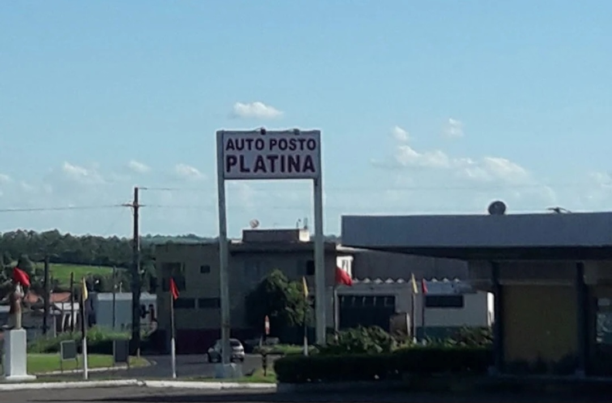
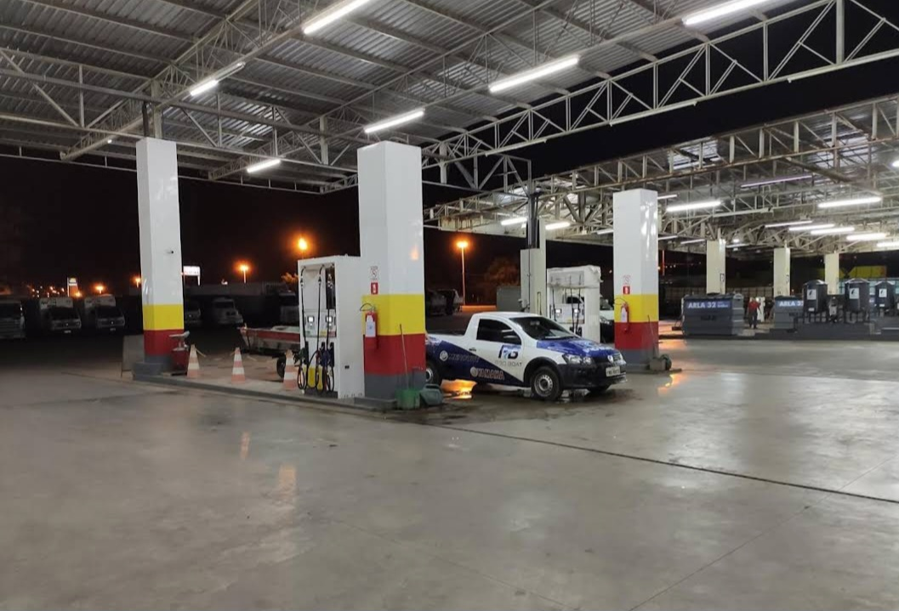
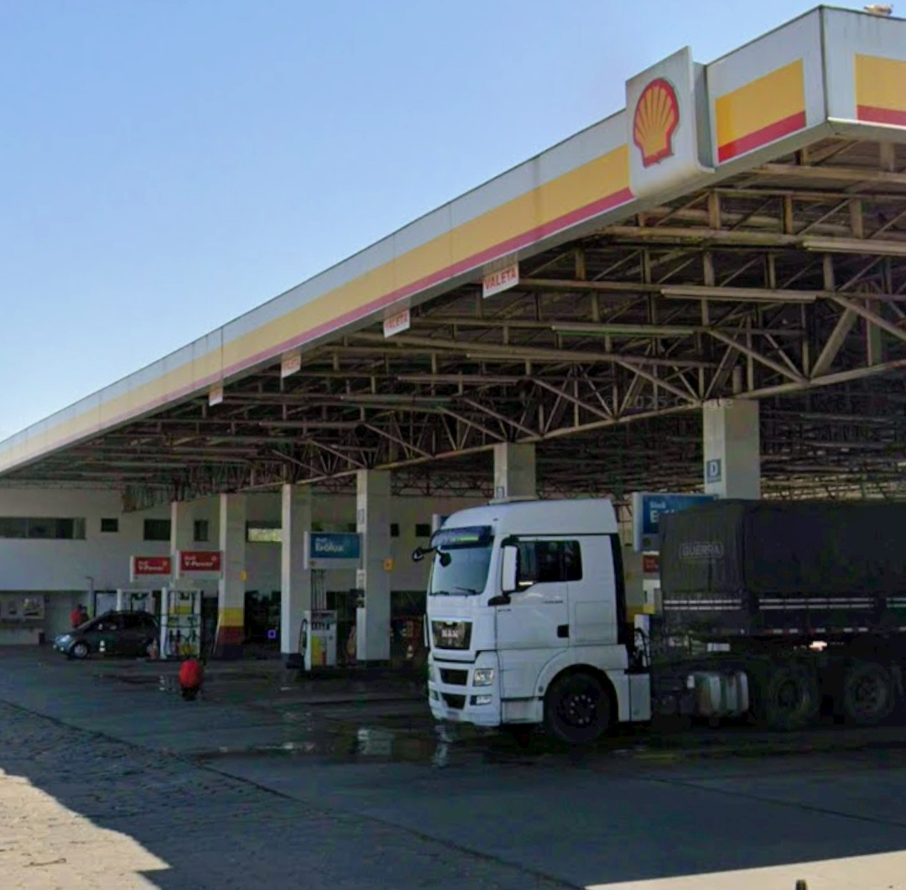
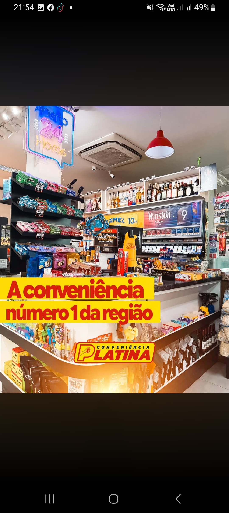

Posto de Combustível • Santo Antônio da Platina - PR
O Auto Posto Platina, conhecido na região como Platinão, é uma das grandes referências do Norte Pioneiro Paranaense, oferecendo estrutura completa, praticidade e atendimento de qualidade para quem está na estrada.
Localizado em ponto estratégico na BR-153, Km 42 (Rodovia Transbrasiliana), Vila Claro, em Santo Antônio da Platina/PR, o posto funciona com atendimento 24 horas, sendo parada certa para motoristas, caminhoneiros, viajantes e clientes da região.
Mais do que abastecimento, o Auto Posto Platina oferece uma experiência completa: conta com conveniência 24h, ampla variedade de produtos, atendimento qualificado e estrutura preparada para atender com eficiência e conforto.
O local também abriga o tradicional Restaurante Platina, que oferece comida caseira, fogão a lenha e pratos feitos diariamente, proporcionando uma refeição saborosa e acolhedora para quem passa pela rodovia.
Com combustíveis de qualidade, excelente localização e serviços pensados para facilitar a rotina de quem viaja ou trabalha na estrada, o Auto Posto Platina se consolida como um ponto de apoio completo e confiável.
Endereço: BR-153, Km 42 - Vila Claro
Cidade: Santo Antônio da Platina - PR
Atendimento: 24 horas
Telefone: (43) 3534-4545
Ligar agora WhatsApp✔ Atendimento 24h ✔ Conveniência com ampla variedade ✔ Restaurante Platina ✔ Comida caseira e fogão a lenha ✔ Ponto de parada para caminhoneiros e viajantes ✔ Combustíveis de qualidade ✔ Localização estratégica na BR-153


